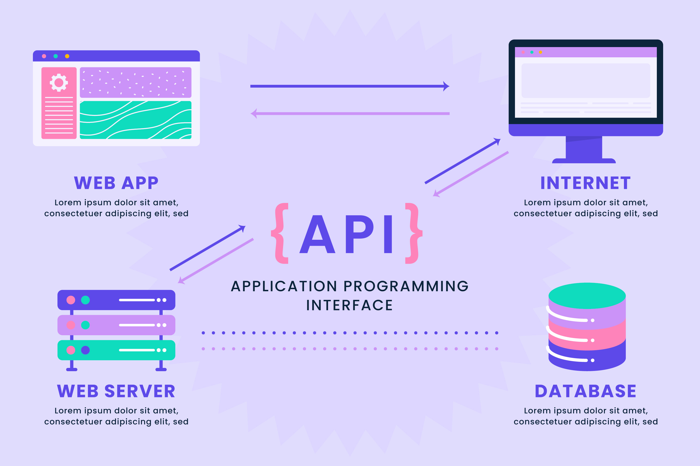

COMANDOS

RAMAS

GIT-GITHUB


COMANDOS
RAMAS
GIT-GITHUB
card 1

card 1
¿Qué es Git? Es un sistema de control de versiones distribuido. Te permite guardar el historial de cambios en tus archivos (normalmente código) y volver atrás si algo falla. Funciona en tu ordenador, aunque también se puede sincronizar con servidores remotos. Comandos tÃpicos: git init, git add, git commit, git branch, git merge, git push… 👉 Piensa en Git como la herramienta que maneja el cerebro del proyecto: los cambios, las ramas y los commits.
¿Qué es GitHub? Es una plataforma en la nube que usa Git por detrás. Sirve para guardar repositorios online, compartirlos y colaborar con otras personas. Añade funciones extra que Git no trae de serie: Interfaz web para tus repositorios. Issues (gestión de tareas). Pull Requests (proponer cambios). Wikis y documentación. Integraciones con CI/CD. 👉 Piensa en GitHub como el punto de encuentro online donde varios programadores pueden colaborar en el mismo proyecto usando Git.
En resumen: Git = la herramienta para controlar versiones (local o remoto). GitHub = un servicio en internet que usa Git para que trabajes en equipo.
card 1